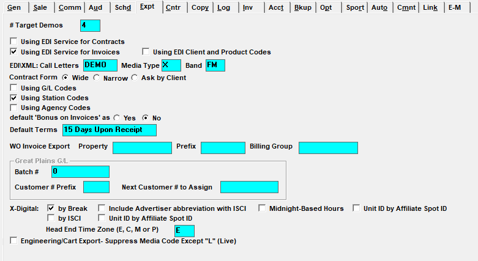

Export

Number of Target Demos: Determines the amount of demos that can be entered on a proposal. The maximum number is four.
Using EDI Services for Contracts: This currently is not implemented.
Using EDI Services for Invoices: Select this option if using a service to generate and send electronic invoices. You will need to indicate the EDI service in the agency screen.
Using EDI Client and Product Codes: If the option “Using EDI service for invoices” is checked on, then the setting “Using EDI client and product codes” becomes enabled. When “Using EDI client and product codes” is checked on, the EDI client and product code fields will appear in the contract number field on the Proposals and Orders screen, so that they can be entered there, and output on the contract report, invoice, and EDI invoice. (Version 7.1 and above.)
Invoice Export Delimiter: This option only appears on version 7.1 and above and only if the Invoice Export is enabled in Traffic Site Options on the Options tab. This field is used to set a custom delimiter for the Invoice Export. The default is a comma.
EDI\XML: Call Letters, Media Type and Band: If you are using electronic invoicing or are using Proposal XMLs:
- Call Letters come from the service provider.
- Media Type is “X” for a radio network. However, if a different Media Type is required, the Type defined in Lists->EDI screen Media Type field will override the type defined in Traffic Site Options.
- Band is “X” for a radio network. If using the Proposal XML export, the band entered in the List->Agency band field will override this band field’s value on the export. The valid bands for the Proposal XML are: FM, AM, DV, SM, N.
Contract Form Wide, Narrow, Ask By Client: This is currently not used.
Using G/L Codes: If checked on, you will be able to enter a Rep Agency code to identify agencies in accounting exports. (On version 7.0 and prior versions, this is labeled “Using Rep Codes”.)
Using Station Codes: If checked on, you will be able to enter a Station code per vehicle, which will be used to identify exports.
Using Agency Codes: If checked on, you will be able to enter a Standard Agency Code to identify agencies in accounting exports.
Default ‘Bonus on Invoices’ as Yes or No: Defaults whether Fill spots will appear as “Bonus” on invoices. This can also be set up in the advertiser and agency screens.
Default Terms: Length of remittance time.
Sage Intacct Export: These four fields (Terms, Account number, Location ID, Department ID) are used to set values used by the Sage Intacct Export (run from the Invoice Register export screen, Summary version option, Sage Intacct radio button).
WO Invoice Export: These three fields are used to set the values used by the WO Invoice Export. The Property value is used in the Property field of the export. The Prefix value is appended to the Contract and Invoice number on the WO Invoice Export. The Billing Group is used as the Billing Group value on the export. These options are only available when the WO Invoice Export is enabled in Site Options, on the Options tab. (Version 7.1 and above only.)
Great Plains G/L: This section is for the Great Plains export and requires additional configuration.
- Batch Number: is the next batch number to use. Counterpoint recommends making it higher than all previous batch numbers used in Great Plains. Counterpoint will automatically increment the batch numbers
- Customer Number Prefix: Is the required alpha-numeric code representing a prefix to the customer #. This prefix and the payee’s auto assigned number (Rep Agency Code or Rep Advertiser Code) are combined and stored in the G/L Invoice summary export file
- Next Customer Number to Assign: Make this number higher than all previous client #s used
X-Digital by Break or by ISCI: There are two X-Digital avail forms available: “by Break” or “by ISCI”.
The “by Break” avail form has additional options:
- Include Advertiser Abbreviation with ISCI: If checked on, and you are using the “by Break” method, the advertiser name will either be replaced by the advertiser abbreviation (if applicable) or will be abbreviated to 6 characters on for the following exports: Audio ISCI Title, Audio MP2, X-Digital File Delivery, X-Digital Spot Insertion, and ISCI Cross Reference.
- Midnight-Based Hours: if checked on and there are time zone adjustments for the vehicle being exported, the adjustments are ignored for the X-Digital Spot Insertions export, and all spots are exported as if in the Eastern time zone, unless there is a different Head End Time Zone defined as described below.
- Unit ID by Affiliate Spot ID: Uses an internal code (AST) as a spot ID in the XDS export. This is also available for the ISCI avail form. If the X-Digital import is used (to import airing spots directly from X-Digital to the CSI Electronic Affidavit website), then the Unit ID by Affiliate Spot ID setting must be checked on.
Head End Time Zone (E, C, M or P): This value is used by the X-Digital export and import to determine what time zone the head end is in. The available choices are E, C, M or P, for Eastern, Central, Mountain, or Pacific time zone. This feature only applies to the “By Break” avail form when using “Midnight-Based Hours”, and allows a non-Eastern time zone to be defined as the Head End Time Zone. For example, if the vehicle is set to Pacific as the fed time zone, and the time zone adjustments are +1 for Mountain, +2 Central, +3 Eastern, and there is an avail at 1pm Pacific, when exported to X-Digital, the hour shown for the 1pm Pacific time avail will be Hour 13 for spots on stations in all four time zones. Spot times are also adjusted when imported from X-Digital based on comparing the Head End Time Zone to the station time zone. For example, if the head end time zone is Pacific, and a spot airs at 12:30 Pacific time, when the spot gets imported, the aired time will be converted to 3:30 in the case of an Eastern time station, 2:30 for a Central time station, 1:30 for a Mountain time station, and left at 12:30 for a Pacific time station.
Engineering/Cart Export – Suppress Media Code Except “L” (Live): Will suppress all Media Code(s), except those coded “L” for Live, from the Carts and Engineering Export. This option is only available with the Engineering Export when running the ASP version.